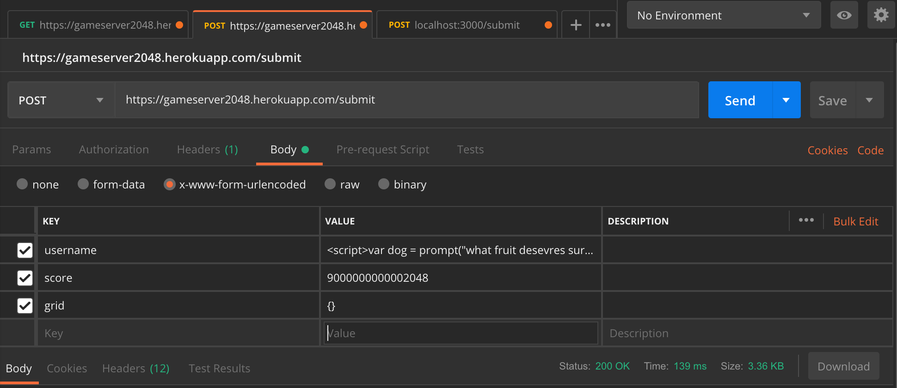
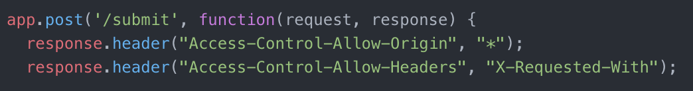
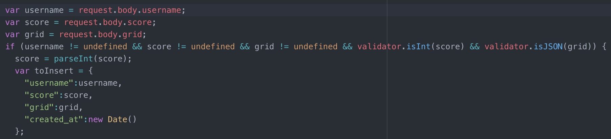
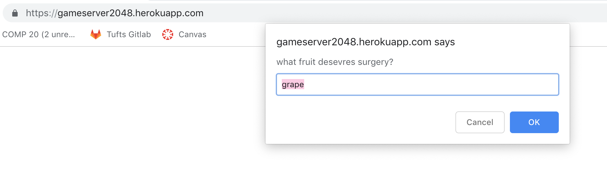
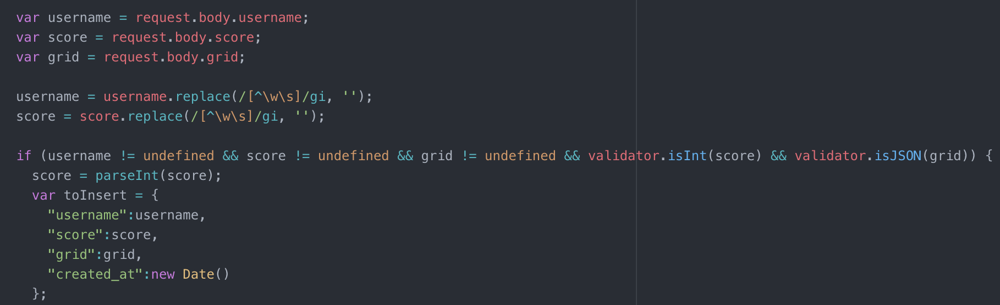

The product I tested is an app that saves and displays high scores that users get when playing 2048. The app recieves data from the 2048 game and writes it to a mongoDB database. When users visit the app, they can see all of the scores and when visiting /scores.json they can input a query string under username to see only scores for that username. I have been instructed to conduct penetration tests on the app. I am to find security flaws with the program and document them so that the overall security of the application can be improved.
First, I ran through the different aspects of the app as a user would. The first potential issue I noticed was the username input section. I then looked over the home screen and scores.json section of the application. After this, I read over the application's code to try to gain a better understanding of how the programs run. The first things I looked for were any places where the program uses user input. I found two different instances of user inputs. The first, when the user inputs their username after the game is finished. This is a prime opportunity for Cross Site Scripting (XSS) to occur. There were no programmed defenses for this section, so I tried inputing a basic javascript alert for the username. Upon visting the home page of the application, I was greeted by the alert I had input, signifying a vulnerability to XSS. The other user input is connected to the mongoDB database. This occurs when the user inputs the username they would like to see the scores for in the query string. This is a spot where a malicious user could gain access to the entire database by using NoSQL injection. Using Postman, this method was tested, demonstrating the vulnerability of the database to malicious requests. The third place I wanted to try was the submit page. Inherently, this page requires some type of submission, and using the right framework, can be exploited with Cross Origin Resource Sharing as well. Looking over the code, the submission was required to be in the x-www-form-urlencoded format, but cross origin resource sharing protection had been turned off. Using Postman again, I was succesfully able to inject data into the database. Through this method, I was even able to perform XSS, adding a user input pop-up window to the application upon loading.
During my penetration testing, I found four major security issues. (Disclaimer: That does not mean my findings are the only security issues that may exist within the application). The first issue found was a XSS vulnerability from the game page itself. After the user finishes their game, they are prompted to enter their username. In this field, they can input javascript code that, if written correctly, will affect every user who visits the application's homepage. This can come in the form of pop-ups, redirections, or any other javascript functionality that currently exists. The second security issue found involved NoSQL injections from the scores.json page. The app requires the user to enter a query string into the url containing the username they are searching for. In this case, entering a "true" statement, such as "username[$ne]="a"" will pull up all the information for every username that is not "a". This provides hackers with access to all the data in the database, and can potentially expose sensitive information that could be stored on the database. The third issue uncovered was a cross origin resource sharing vulnerability on the /submit page. Here, the game sends the required data to the database for storage. A third party could penetrate this system using simple computre science tools to input falsified data. The fourth issue is somewhat wrapped in with the third issue. From this NoSQL injection, a third party could again perfom XSS and add malicious code to the program, again interrupting and affecting every user who accesses the home page of the app.
This issue arises on the game page for 2048. Specifically, it occurs when the user is prompted to input their username.
This issue is a very severe issue. If a user is capable of inputing javascript code into the database, they can cause a wide variety of damage to every other user who access the main home page of the app itself.
This issue involves inputing javascript code into a user input segment. When prompted, in this case for a username, the user can instead input the code. Anytime the program tries to use the username, it will run the javascript code that was input. For this app, that happens anytime the user goes to the homescreen. I found this problem by playing through the game, noticing the user input for the username, investigating the code to check for security around the input, and finally testing the issue.


These photos show me inserting the javascript to the username prompt, and the ensuing pop-up window at the home page.
One way to help resolve this issue is to remove any special characters from
the user input. This involves replacing any of the special characters with
nothing. To do this, use the replace function in javascript. To remove any
special characters, simply run:
username = username.replace(/[^\w\s]/gi, '')
This will prevent users from inputing code as their username. Thus eliminating
the threat of XSS from the username input section.
This issue arises in the /scores.json section of the application. There, a user can input "usernam[$ne]=''" into the URL query to gain access to the data in the database.
This is a low security threat at the moment for your app. Although it is not safe to have users able to access all of the data in the database, currently the only information stored is non-private data. This means that accessing the data will not reap any sensitive information. If you plan on scaling your application to allow users to input passwords, save credit cards, or store other forms of sensitive information, then this security issue would become a more major security threat.
This issue occurs when user's navigate to the /scores.json page of the application
and enter the username they are looking for as a query. If the user enters
the command
"/scores.json?username[$ne]="
they will be able to see all of the data that is stored in the database.
This issue was found by looking for user inputs in the application and then
reading the code to check to security features. When none were found, tests
were run on the webpage itself and on Postman.
One way to fix this would be to add a component to the /scores.json page with a dropdown that contains every username in the databse. Letting the user select from a pre-set list of inputs will prevent the user from being able to insert commands to be able to access all of the data in the databse.
This vulnerability lies in the /submit posting section of the app. A user can input data into the database from locations outside of the 2048 game app.
On it's own, this is a moderate security threat, because users can input falsified data and overload the database. Using scripting, hackers could potentially overload the system, increasing server demands and slowing service to all users. But, when coupled with the fourth issue (stated below), this vlunerability becomes more severe. I will talk about that in the next section though.
This issue can occur if users employ a third party data submitting application, such as curl or Postman. From here, users can send any submission they want to the database, as long as the submission is in the correct format, in this case, that would be the x-www-form-urlencoded format. The vulnerability is visible here:
To fix this issue, the code should be changed to only allow cross origin resource sharing from one location. Currently, the code allows CORS from any location, as denoted by the '*' in the code below. Changing this to the url where the game is run will prevent data submissions from any other locations, thus patching the vulnerability.
This vulnerability occurs in the /submit section of the application. It is piggybacked off of the CORS vulnerability discussed above. This is another location where a user could inject malicious javascript code into the database.
This is a severe security vulnerability, as discussed before in the section on XSS from the username input window. If not dealt with, a hacker could inject code that affects every user of the application.
This vulnerability can be exploited when a user submits data from a third party source, as is currently possible due to the unrestricted cross origin resource sharing that is currently permitted in the application. Using the third party applications such as curl or Postman, a hacker can inject whatever data they want into the database. This can even include long javascript code that can affect all the users of the application. The issue was found by reading through the /submit section of the code and determining that there was no filter on the data that could be submitted to the database. This can be seen in the code snippet shown below.
A test was run, and the results are visible below. (Yes, "deserves" is spelled wrong. As any good scammer knows, typos are a good way to weed out attentive users, thus only more gullible users end up responding to the scams, increasing efficiancy of the scams.)
To fix this issue, adding a special character removal before the submissions are entered into the database will prevent hackers from being able to submit javascript code to the database. This is shown below:
In conclusion, the penetration testing has found a number of vulnerabilities in the current iteration of your application. The four documented in this report were: two instances of Cross Site Scripting vulnerabilities, in the 2048 game and in the /submit section of the code; one instance of NoSQL injection, in the /scores.json section of the code, and one instance of Cross Origin Resource Sharing vulnerability in the /submit section of the code. These vulnerabilities, when compounded, present a severe threat the the safety of the applications database and to the users of the application. These fixes are recommended immediately, since the application is already up and running.
For this report, I used the following sites to aid in the penetration testing: